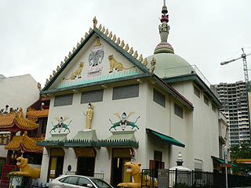
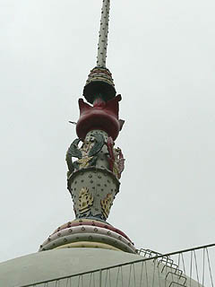
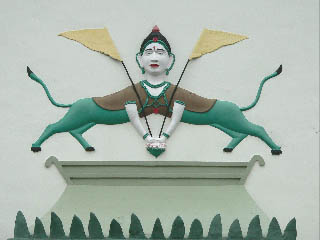
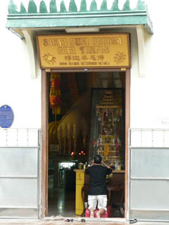
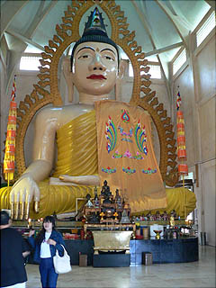
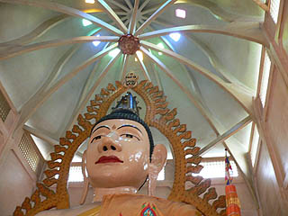
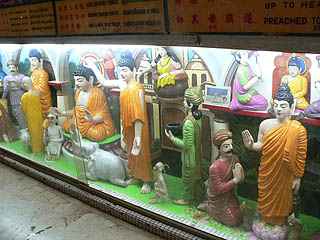
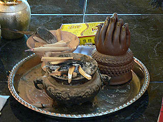
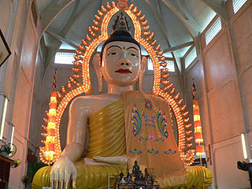

釈迦牟尼善提迦耶寺（千燈寺院）
SakyaMuniBuddhaGaya(TempleOfThousantLights)
シンガポールのリトルインディアに程近い釈迦牟尼善提迦耶寺。通称、千燈寺院。
近くにはヒンズー寺院や仏教寺院、道教寺院などがあり、プチ寺町化している。その一画にある千燈寺院。
寺の外観はいたって地味。というか遠目には寺には見えない。隣の黄色い屋根は別の寺です。
 
気になるのはドーム状の屋根の上に立つ尖塔。
変なイボイボが付いてて変な病気持ちの果物みたいで気持ち悪いです。あ、ドームにハシゴが付いている。登れるのか？
 
正面には人間の頭から2頭の動物の胴体が生えているナゾのレリーフ。あとは頭が3つある象さんとか。で、外から伺うと、おっ、見えて来ました〜。
これがシンガポール最大の大仏、釈迦牟尼佛である。

外観同様、内部もガラーンとしている。
高さは15メートル。1080個の電球が光背に組み込まれていいる。千燈寺院と呼ばれるゆえんだ。
タイから来たブティーサーサラという僧侶がこの大仏を建立したそうだ。そういえば思いっきりタイ式の大仏だ。
光背の一番上には「SAKYA
MUNI
2470」とある。2470とは仏暦で西暦に直すと1927年になる。この大仏の建立された年である。
1927年といえば日本では昭和2年。これは本邦最初のコンクリ大仏が登場した年である。ここの大仏の材質が何なのかハッキリ判らないが、タイやビルマではすでにこのクラスの大仏が幾つも作られている。
恐らくここもそうだと思うのだが、東南アジアの大仏は煉瓦積みに漆喰仕上げ、でペンキ仕上げという工法が多い。これは比較的容易に作れるので、かなり早い時期から大仏が数多く作られて来た。逆に言えば日本には煉瓦積み大仏の文化がなかったので昭和初期のコンクリート工法が確立されるまで大仏が数多く作られなかったという側面がある。
東南アジアの大仏の多くは胎内空間がない。これは工法がコンクリート造になっても煉瓦積みの伝統を引きずっていて「胎内に大空間を作る」という発想が生まれなかったのではなかろうか。逆に煉瓦積みの大仏の経験がない日本の大仏は奈良、鎌倉といった中ががらんどうだった鋳造仏からいきなりコンクリート造に工法がワープしてしまったので胎内に空間を作るという行為は比較的受け入れやすかったのではなかろうか。

天上のドームは梁が二重になっていてスッキリし過ぎた建物の中では装飾的だ。
気になったドーム外側の階段だが、中には入れないようだ。尖塔が避雷針か何かになっていてそれのメンテナンス用のハシゴだったのだろうか。
大仏の背後にまわり込むとお尻のところに小部屋があって寝釈迦がいた。
寝釈迦は撮影禁止、しかもお寺の人が一緒に寝釈迦に付いて来たので念写も出来なかった。ま、わざわざ撮りたくなるようなトコロじゃなかったからどうでもいいんですけど。それより大仏の正面はOKで何で後ろの部分だけが禁止なのかが良く判らなかった。
 
大仏の台座には釈迦の一生を説明した人形ジオラマがぐるっと一周していた。で、香炉の近くにあったナゾの仏具。
合掌型で用途不明なんですけど御存じの方御一報ください。
お寺の人が灯りをつけてくれた。う〜む。やっぱり光背が光っていた方が全然かっこいいっすね。

本堂の左手の棚の上に縦型の手回しルーレットがあった。これはおみくじだそうで、手でグルグル廻して止まった番号の紙を見るというシステム。
ちなみに吉でした。
って、そういえばコレって初詣だった！
今年もいい珍寺に出会えますように〜。
次のスポットへGO！
馬来半島珍寺伝説
珍寺大道場 HOME